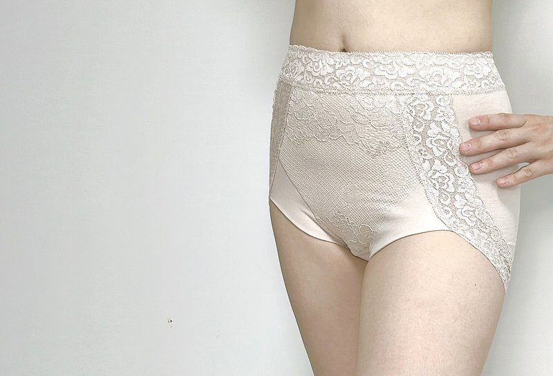
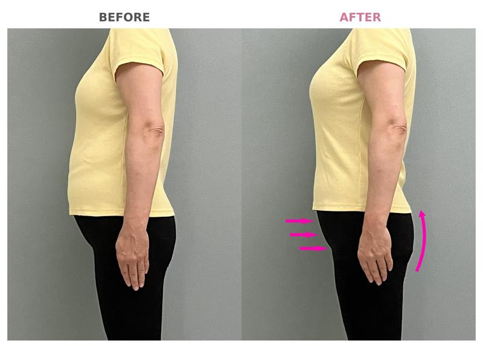
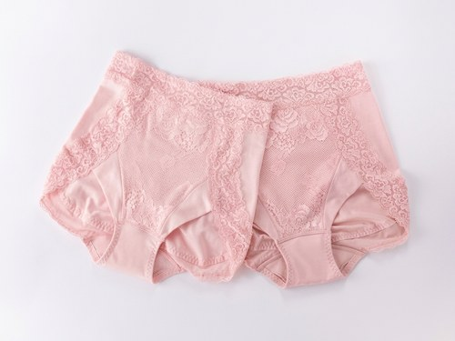
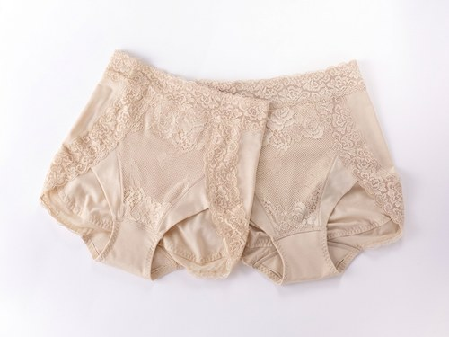

デザインが可愛く締め付け感も少ないのに自然に体型補正。従来の窮屈な補正下着の印象を覆し、普段使いもできそう。
下腹部まで包み込む安心設計。柔らか素材で窮屈感なく、骨盤を支える安定感と履き心地の良さで、日常的に愛用したくなる仕上がりです。
シアバター加工の生地はとろみある肌触り。ストレッチレースとクロスネットで下腹部を支え、急なモレ対策もできる大人女子の味方です。
今だけ10%OFF。毎日はくから、2枚セットが断然お得です


数値はすべてcm表記です
| サイズ | ウエスト | ヒップ |
|---|---|---|
| M | 64〜70 | 87〜93 |
| L | 69〜77 | 92〜100 |
| LL | 77〜85 | 97〜105 |
サイズ選びに迷ったら、購入前のお問い合わせもご利用ください。